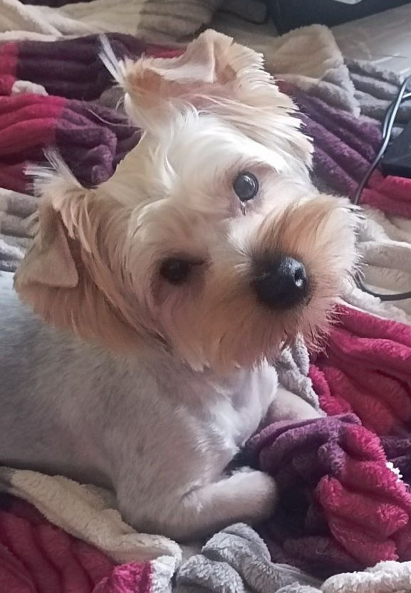

Дюк
гарантую, він не ображається на це ім'я

Дюк вийшов не схожий на своїх батьків характером. "Бойовим" його назвати складно, хоча він і любить погавкать на інших собак, щойно помічаючи увагу в свій бік від незнайомого пса чи людини - ховається за мене. Дуже рідко дає себе погладить незнайомцям. Надмірну увагу впринципі не переносить, хоча інколи її прямо таки вимагає. Коли працюю лягає на диван поряд, починає то "плакати", то гавкати, привертаючи до себе увагу. Головне хоббі - перегавкування з собаками на вулиці через вікно, особливо під час моїх робочих мітингів. Любить коли йому чухають пузіко та грудку. Як лягає спати то дуже щільно тулиться під руку. Йому дуже подобається коли до нього говорять, завжди уважно слухає, хоча навряд щось розуміє.
тут ця кнопочка нічого не зробить, але Дюк зацінить такий непрямий прояв уваги